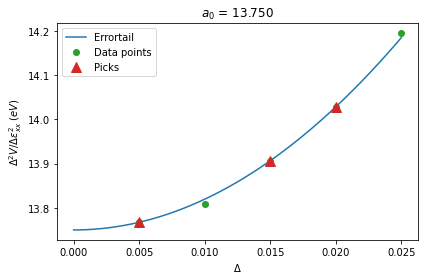

[1]:
%matplotlib inline
Finite Displacements
[2]:
import numpy as np
import matplotlib.pyplot as plt
from principia_materia.translation_group import CrystalFTG
from principia_materia.mathematics.finite_difference import FiniteDifference
from principia_materia.phonon_id.finite_displacements import FiniteDisplacements
from principia_materia.phonon_id.strained_finite_displacements import StrainedFiniteDisplacements
from principia_materia.io_interface.compute_job_series import ComputeJobSeries
from principia_materia.io_interface.jobs_db import JobsDB
from principia_materia.mathematics.errortail import get_errortail
[3]:
# NaCl example
lattice_vectors = np.array([
[0.0, 0.5, 0.5],
[0.5, 0.0, 0.5],
[0.5, 0.5, 0.0],
])
atoms = {
"Na": np.array([[0.0, 0.0, 0.0]]),
"Cl": np.array([[0.5, 0.5, 0.5]]),
}
supa = np.identity(3, dtype=int)
orbitals = "p"
structure = CrystalFTG(vec=lattice_vectors, atoms=atoms, supa=supa, orbitals=orbitals)
Finite Difference
The core mathematical algorithms of finite difference calculations.
[4]:
fdiff = FiniteDifference(order=(2, 1))
fdiff.set_delta(np.arange(0.01, 0.03, 0.01))
[5]:
fdiff.set_steps()
[6]:
fdiff._stencils
[6]:
array([[ 2, 1],
[ 2, -1],
[ 0, 1],
[ 0, -1],
[-2, 1],
[-2, -1]])
[7]:
fdiff.uniq_steps
[7]:
array([[-0.04, -0.02],
[-0.04, 0.02],
[-0.02, -0.01],
[-0.02, 0.01],
[ 0. , -0.02],
[ 0. , -0.01],
[ 0. , 0.01],
[ 0. , 0.02],
[ 0.02, -0.01],
[ 0.02, 0.01],
[ 0.04, -0.02],
[ 0.04, 0.02]])
Finite Displacements
Compute derivatives of displacements with finite difference.
[8]:
supa = np.identity(3, dtype=int) * 2
fd = FiniteDisplacements(
structure=structure,
supa=supa,
fdtype="c",
tol=1.0E-6,
)
[9]:
displacements = np.zeros((2, ) + fd.supercell.positions.shape)
displacements[0][0, 0] = 1
displacements[1][1, 0] = 1
[10]:
fd.set_displacement_vectors(dispvecs=displacements, displabels=[1, 2])
fd.set_delta([0.01, 0.02])
fd.set_jobs()
[11]:
root_directory = "fd_runs"
dft_engine = "vasp"
job_handler = ComputeJobSeries(
structure=fd.supercell,
root_directory=root_directory,
compute_engine=dft_engine,
config_path=None,
)
[12]:
fd.create_jobs(
job_handler=job_handler,
dry_run=True,
)
Strained Finite Displacements
Compute derivatives of strain and displacements with finite difference.
[13]:
e_xx = np.array([[1, 0, 0], [0, 0, 0], [0, 0, 0]]) # xx
e_yy = np.array([[0, 0, 0], [0, 1, 0], [0, 0, 0]]) # yy
e_zz = np.array([[0, 0, 0], [0, 0, 0], [0, 0, 1]]) # zz
e_xy = np.array([[0, 1/2, 0], [1/2, 0, 0], [0, 0, 0]]) # xy
e_xz = np.array([[0, 0, 1/2], [0, 0, 0], [1/2, 0, 0]]) # xz
e_yz = np.array([[0, 0, 0], [0, 0, 1/2], [0, 1/2, 0]]) # yz
[14]:
supa = np.identity(structure.dim, dtype=int)
sfd = StrainedFiniteDisplacements(
structure=structure,
supa=supa,
)
[15]:
sfd.set_strain(strain=[e_xx, ], strain_orders=(2, ))
strain_delta = np.arange(0.005, 0.03, 0.005)
sfd.set_strain_delta(strain_delta)
sfd.set_finite_difference()
sfd.set_jobs(skip_zero=False)
[16]:
sfd._finite_difference.uniq_steps
[16]:
array([[-0.05],
[-0.04],
[-0.03],
[-0.02],
[-0.01],
[ 0. ],
[ 0.01],
[ 0.02],
[ 0.03],
[ 0.04],
[ 0.05]])
[17]:
job_handler = JobsDB(
structure=structure,
root_directory="nacl_sfd",
db_path="nacl_sfd/database.db",
db_type="sqlite"
)
job_handler.set_table("strain")
[18]:
sfd.create_jobs(
job_handler=job_handler,
dry_run=True,
)
[19]:
sfd.set_raw_results(
source=job_handler,
data_type="energy"
)
[20]:
sfd.compute_finite_displacements()
[21]:
result, xcoef, pick, penalty = get_errortail(
deltas=strain_delta,
values=sfd.fd_result.reshape((-1, 1)),
fdtype="c",
pick_min=3,
pick_max=5,
seperate_complex=False,
return_xcoef=True,
return_pick=True,
return_penalty=True,
)
[22]:
result[0]
[22]:
13.750108012806797
Errortail for strain derivative
[23]:
errortail_x = np.linspace(0, strain_delta[-1], 100)
errortail_y = np.power(errortail_x, 2) * xcoef[0] + result[0]
[29]:
plt.plot(errortail_x, errortail_y, c='tab:blue', ls="-", label="Errortail")
plt.plot(strain_delta, sfd.fd_result, c="tab:green", ls="", marker="o", label="Data points")
plt.plot(strain_delta[pick[0]], sfd.fd_result[pick[0]], c="tab:red", ls="", marker="^", ms=10, label="Picks")
plt.title("$a_0$ = {:6.3f}".format(result[0]))
plt.legend()
plt.ylabel(r"$\Delta^2 V/\Delta\epsilon^2_{xx}$ $(eV)$")
plt.xlabel(r"$\Delta$")
plt.tight_layout()
plt.savefig("sfd_errortail.pdf")
